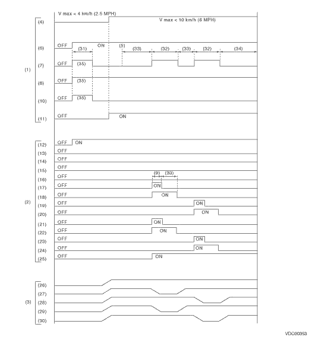

VEHICLE DYNAMICS CONTROL (VDC) > ABS Sequence Control
1. While the ABS sequence control is being performed, the operation of the VDCH/U can be checked after the operation of the VDCH/U solenoid valve, using the brake tester or pressure gauge.
2. ABS sequence control can be started by the Subaru Select Monitor.
1. ABS SEQUENCE CONTROL WITH SUBARU SELECT MONITOR
1. Connect the Subaru Select Monitor to the Subaru data link connector under the driver’s side instrument panel lower cover.
2. Turn the ignition switch to ON.
3. Set the Subaru Select Monitor switch to ON.
4. Set the Subaru Select Monitor to “Brake Control” mode.
5. When the “Function check sequence” is selected, the “ABS sequence control” will start.
6. Execute the following steps when the message “Press the brake pedal so that the brake pedal force is between 100 and 150 kgf” is displayed.
(1) When using a brake tester, press the brake pedal with a force of 1,000 N (102 kgf, 224 lbf).
(2) When using the pressure gauge, press the brake pedal until pressure gauge indicate 3,500 kPa (36 kgf/cm2, 511 psi).
7. If “Press the “YES» key» is displayed, press the «YES» key.
8. The brake line being operated is displayed on the Subaru Select Monitor.
2. CONDITIONS FOR ABS SEQUENCE CONTROL

|
(1) |
Operation guide line of the sequence control |
(13) |
Secondary cut valve |
(25) |
Pump motor |
|
(2) |
Operation pattern of sequence control |
(14) |
Primary cut valve |
(26) |
Master cylinder pressure |
|
(3) |
Operating pressure of sequence control. |
(15) |
Secondary suction valve |
(27) |
FL wheel cylinder pressure |
|
(4) |
All wheel speeds |
(16) |
Primary suction valve |
(28) |
FR wheel cylinder pressure |
|
(5) |
Point A |
(17) |
FL outlet solenoid valve |
(29) |
RR wheel cylinder pressure |
|
(6) |
Ignition switch |
(18) |
FL inlet solenoid valve |
(30) |
RL wheel cylinder pressure |
|
(7) |
ABS warning light |
(19) |
FR outlet solenoid valve |
(31) |
Approx. 2 sec. |
|
(8) |
VDC warning light |
(20) |
FR inlet solenoid valve |
(32) |
1.4 sec. |
|
(9) |
0.4 sec. |
(21) |
RR outlet solenoid valve |
(33) |
1.0 sec. |
|
(10) |
VDC indicator light |
(22) |
RR inlet solenoid valve |
(34) |
0.6 sec. |
|
(11) |
Pressure sensor |
(23) |
RL outlet solenoid valve |
(35) |
Light ON |
|
(12) |
Valve relay |
(24) |
RL inlet solenoid valve |
NOTE:
Operation starts from point A.